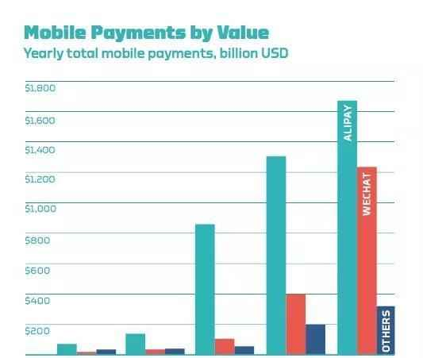

央行首次宣布, 马云金融帝国梦碎?
来源：移动信息杂谈/大鱼号 /08-08 /07:52
这两天，有一条新闻刷屏了：央行把支付宝们给“收编”了！第三方支付业界惊呼：一个时代结束了，新的时代开启了。
殊不知，真正的巨变还在后头。
还是先普及一下，大家平常的资金往来，是怎么在银行系统流转的。
在杰克马（马云）搞支付宝之前，人们的资金往来只有三层：用户层、银行层、清算层。
比如，小明要从银行A给女票的银行B的户头转账，流程就是这样的：
小明—>银行A—>央行的清算平台—>银行B—>小红
当有了第三方支付之后，情况就变得不一样了。
比如小明要通过支付宝的账户，给小红的支付宝账户转1000元钱。小明支付宝绑定的的银行A，小红是银行B，此时的结构变成了：
小明在A银行的钱—>支付宝公司在A银行的账户—>支付宝公司在B银行的账户—>小红在B银行的钱。
为了排查这些定时炸弹，央行才成立“网联”公司。意思就是说，以后Jack也好，Pony也好，强东也好，你们的支付都得排队到这个平台来清算。
这样一来，上面小明向小红通过支付宝跨行转账的流程就要加上一层了：网联。
小明在A银行的钱—>支付宝公司在A银行的账户—>网联—>支付宝公司在B银行的账户—>小红在B银行的钱。
说到底，所谓央行“收编”的本质，是所有网络支付业务要通过网联这个平台处理，而不是各自为政，游离于央行的监管之下。
更重要的是，央行这一招，直接打破了Jack和Pony通过支付宝和微信支付对金融和消费大数据的垄断，所有的支付清算数据，最终都通过网联汇总到央妈这来了。
然而之前Jack说：如果银行不改变，我们就改变银行。 现在央行说：如果支付宝不改变，我们就改（收）变（编）支付宝。
不过，其实这并不是新消息了。网联平台早在今年3月份就开始了试运行，4个多月以来，各家早已经把大量的业务转移到了网联层面，只不过我们一般人在使用上没有什么感受而已。
真正的巨变来了！央行首次宣布！
最近真正对于互联网金融有重大影响、让Jack和Pony们的金融帝国之路更为坎坷的，是央行下面这个文件。
8月4日，央行货币政策分析小组发表了中国区域金融运行报告（2017），第一次明确提出这么一个观点：
将探索把规模较大、具有系统重要性特征的互联网金融业务纳入宏观审慎管理框架，对其进行宏观审慎评估，防范系统性风险。
什么意思？
简而言之，就是未来阿里旗下的余额宝等具有互联网金融业务的公司将和银行一样，接受每个季度的MPA，即宏观审慎评估体系，考核体系。
所谓MPA，简单理解就是一个紧箍合集，你再也不能想怎么玩怎么玩。
如果还不够直白，那就直接上例子吧。
蚂蚁花呗，大家都用过吗？就是你没钱了，可以在支付宝上，找杰克马借钱，八千一万啥的，都好说。
其本质就是传统银行的放贷。支付宝搞这事的基础，是它有巨大的资金池（它在各个银行开设的专用账户）。但传统银行放贷，是要受到严格的资本充足率的监管的。
好比说，监管规定，资本充足率不得低于8%，那么你放100块钱的贷款出去，银行自己就必须要有不低于8块钱的自有资本。反过来，银行自有资本的规模，乘以12.5倍，就是你能放贷款的最大规模。
但是花呗就可以不受这个限制。你说如果Jack和Pony无限借钱出去，会不会造成巨大的金融风险？
现在互联网金融平台上都是小打小闹的钱，所以之前央行也一直没管。但随着第三方支付和线下场景的结合，规模正在变得越来越大。
让我们为之惊讶的是余额宝的净资产已经增长至1.43万亿——余额宝的规模已经和国有和股份制大行同类可以随时存取的个人活期存款分庭抗礼！
然而，余额宝目前排在中国银行之后排名第五，远远超过好几个股份制银行；且就发展趋势来说，超越中国银行只是时间问题。
互联网公司发展也实在太迅猛。然而在支付领域，支付宝和微信的移动支付4年间市场规模增长了20倍，2016年达到2.9万亿美元；

2012年到2016的统计
然而 ，全国非银行支付机构的网络支付业务，在2016年成交笔数额金额分别为1639.02亿笔和99.27万亿元，同比增长99.53%和100.65%。在已经庞然大物的情况下，仍然保持高速增长，且越来越靠近传统金融公司，这次央行真的要出手了！原创/政商参阅